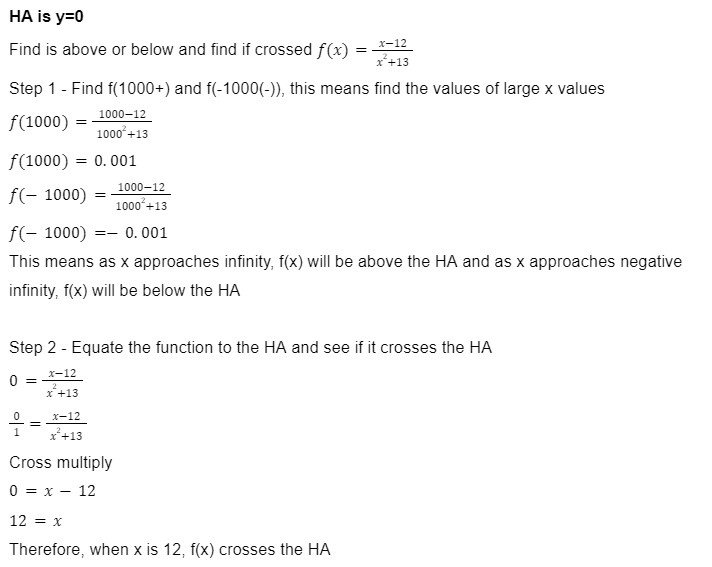
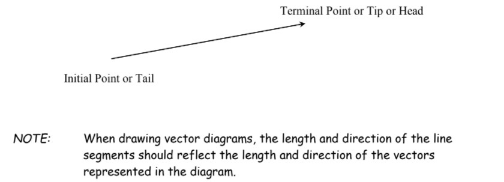
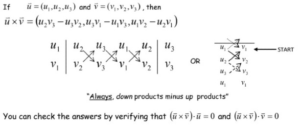
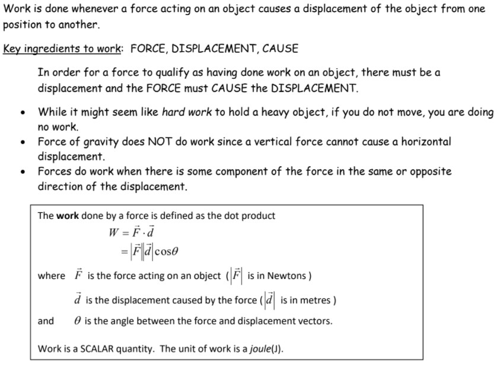

The Calculus Study Guide
By: Priyanshu.G
Click on the navagation bar to access the sites components, Each Unit is explained breifly while working through a few examples, and the end of Unit 1, 2, and 4 are word problems that are a bit more diffcult. Don't feel bad if you can't do them, I likely cried while doing them myself.
Hover over the navagation buttons to see what the unit title is!
Major Problem 1 - Unit 2
Major Problem 2 - Unit 4
Major Prolem 3 - Unit 6
Limits
What is a limit?
We write
(read as “the limit of "f(x)", as x approaches 'a', equals the number L”)
Note: The values of the function f(x) become closer and closer to the number L as x gets closer and closer to the number 'a' from either side (but x does not equal 'a')
How do we solve for L?
Method 1 - Table
Step 1 - Rewrite as a limit
Step 2 - Draw out a table with x values slowly approaching 'a' from either side and evaluate the values
| Approaching x = 5 from the left (x → 5-) | Approaching x = 5 from the right (x → 5+) | ||
|---|---|---|---|
| x<1 | f(x)=x2+9 | x>1 | f(x)=x2+9 |
| 4.9 | 33.01 | 5.1 | 35.01 |
| 4.99 | 33.9001 | 5.01 | 34.1001 |
| 4.999 | 33.990001 | 5.001 | 34.010001 |
Step 3 - Using the table you made, evaluate the limit!
Therefore, as x approaches 5 from either direction, f(x) gets closer to 34
Note: If the limit from the left does not equal the limit from the right, the limit does not exist!
Method 2 - Graph
Determine the following limits:
1. For question 1, if we look at the graph, we can see that the left and right of x=1 both approach 2.
Therefore, the limit of f(x) as x approaches 1 is 2
2. For quesiton 2, once again using the graph, we can see that the graph approaches 1 when x = 2.
Therefore, the limit of f(x) as x approaches 2 is 1
3. Question 3 is different from the other two.
f(x) as x approaches -1 from the left is 3, yet when approaching from the right it is 0.
This mean the limit does not exist (DNE)
Lets go over a few properties of limits and an example on how to use a few of them
Questions
2
Derivatives & Applications of Derivatives
What is a derivative?
The derivative of f(x) is denoted as f'(x)
There are two ways to find f'(x) using f(x)
1. First Principles
2. Rules of differentiation
First Principles
Here is the First Principles method of finding the derivative of a function.
You would replace f(x+h) with f(x) but all 'x' variables are replaced with (x+h). Then you would replace f(x) with the original function.
From here you would simplify until the 'h' variable is out of the denominator.
The reason 'h' needs to be removed is because 'h' will be replaced with 0.
Once 'h' is 0 you can remove the limit and simplify, after which you will have found the derivative.
Let us do an example
Rules Of Differentiation
Lets go over a few examples

If you need a reminder of any of the rules used while reading the questions, feel free to scroll up!
What is the purpose or applications of derivatives?
The most common application of derivatives is position, velocity, and acceleration graphs.
The velocity function is the derivative of the position function and the acceleration function is the derivative of the velocity function.
This also means that the acceleration function is the second derivative of the position graph (this just means the derivative of the derivative and is denoted as f''(x)).
Example Of Velocity Functions
This can be duplicated and done the same for height graphs. The only difference is that when v(t)=0 the s(t) is at a maximum.
One More Use
For word problems we have an algorithm. Lets go over it
Algorithm for Solving Optimization Problems
1. Understand the problem. Identify quantities that can vary. Draw a labeled diagram, if possible, and state the given and required quantities.
2. Determine a function that represents the quantity to be optimized. Then, using the given information, write this quantity in terms of one independent variable.
3. Determine the domain of the function to be optimized, using information given in the problem. The domain must be written in terms of the independent variable used in step 2.
4. Use the algorithm for extreme values to find the absolute maximum or minimum value of the function on the domain found in step 3.
Algorithm for Determining the Extreme (Absolute) Values of a Function on a closed interval [a,b]
If a function f(x) has a derivative at each point on the closed interval a<x<b, calculate f(x) at:
All point where f'(x)=0 and end points on the domain
5. Use the results in step 4 to answer the original problem. Check your answer for validity. Does it make sense? Indicate correct units.
Let us do an example.
A chain of stores has been selling a line of socks for $7 each and has been averaging sales of 12000 socks sold a month. They decide to increase the price, but their market research indicates that for each $1 increase in price, sales will fall by 500. Find the price that will maximize their revenue.
Step 1 - Understand the problem and what variable can change
We know that the price of socks is the changing variable and the number sold is the affected factor. If the price and number sold is changing, then so is the revenue (the amount we want to maximize)
Step 2 - Determine a function that represents the quantity to be optimized in one variable
Step 3 - Determine a domain
Step 4 - Use the algorithm to find the max
Step 5 - Check how right this seems and finialize
7+8.5 = $15.5. Therefore, the cost which would yield the max revenue is $15.5 per sock. Based on the parameters given, this makes sense.
Major Problem 1
a) An Octagonal prism with no roof is built to hold water until half its height. After half the height is filled the water will pour out of one wall that has been cut in half. The cost for the base is $2/m2 and $1/m2 for the sides. Due to order limits from your shipping company the length of the octagon's side cannot surpass 20 meters. What dimensions yield the lowest cost for 3500m3 of total volume? How much water can this prism hold?
Step 1 - Draw a diagram with the labeled parts that can change
Step 2 - Make a function that represent the cost with a single variable (search up the area of a octagon)

Step 3 - Find the domain.
Based on the algorithm above we know the domain we find must be in terms of 'a'
'a' is a real world length and so cannot be negative or 0
Also we know that the 'a' value must be less than or equal to 20 meters
Therefore, our domain is 0<a<=20
Step 4 - Find the derivative, find where it is 0, find the local extremas
After we solve using a calculator for each 'a' value (0,derivative calulation and 20) we get these values
We can clearly we that 6.554 is the correct value for 'a'
Step 5 - Find the value of 'h' and check if it feels right
We can use the area of an octogon, our 'a' value and multiply this by 16.87 to find 3500, this means our answer works!
Therefore, an 'a' value of 6.554 and a height of 16.87 gives us 3500m3 for our volume and also has the lowest cost.
Due to one of the walls being cut our max water storage is actually half the volume, 1750m3
b) Let us first add some context. Earth's iron deposits have been depleted. You are a company on an offworld venture in mars. The costs in the first part were actually the cost for different thicknesses of iron ($1/m2 for thin wall and $2/m2 for thick base). Now the question. A new iron deposit has been found and the price of iron has crashed. The new prices for iron are $0.01/m2 for thin walls and $0.02/m2 for thick base (very big deposit). After the next shipment your company will be bought off for your worth. The next shipment is a 1000 of the pots you have been making. In order to get access to the new prices of extraction you need to build a miner for $1k. The new iron however has an issue with octagonal shapes, it can only form the shape at your required thickness when the length of the side is under 5m. Do you stay with the original prices or do you pay the $1k for the new prices? What is the total cost? Reason your choice.
To answer this question you must understand how derivatives work and why the algorithm for finding extremas works.
First let us compare the old equation and then the equation for cost
Note: the volume needed is the same so the formula to find the height is also the same
When finding the lowest cost we can ignore the +1000 because in the derivative it makes no difference.
We can also assume that the point where the derivative intercepts the x-axis is the same between old and new because the vertical stretch factor is the only difference between the two equations. This factor would not affect the zeros.
But then we can ask why does the extrema algorithm check the values of the domain ends? Especially since the derivative being 0 is almost always the max
The algorithm asks to check the domain ends because of a situation exactly like this. If we adjust the domain of 'a' to being between 0 and 5 instead of 0 and 20, we see a major change. Our derivative's intercept is not in the domain anymore. Yet if we look at the extrema values in our previous equation (this can be done with the new one but is not needed) we see that from 0 to 6.554 the cost is decreasing, after which the value keeps going up. Meaning our lowest cost will be our largest available 'a' value, 5.
Finally, we calulate the cost for each situation (remember to add 1000) and then compare the two costs
Therefore, buying the new deposit of iron is the right choice and it will cost $14,290
You look to your boss in disbelief as your numbers show a scary difference is overall costs. You ask yourself what this change could mean for offworld prospecters. This massive deposit will truly change the course of offworld mining history.
Curve Sketching
How do you accurately sketch a curve?
We will go over each step and an example on how to do them. Then we will do a final complete sketch of a graph
Step 1
Step 2
Step 3
Note: if a factor can be cancelled out then there is a hole in that x-value instead of a asymptote. If the denominator is removed because of this cancellation then there is no VA, but a hole will be present.
Step 4
Next we need to find if the graph is above or below the HA, and if the HA is crossed

Step 5
Step 6
Step 7
Step 8
Using the chart underneath the skinny coloumn, we can see the type of curve each combination of positive or negative first and second derivatie make.
Step 9
Drawing out all the HAs and VAs, using the infinity limits, and plotting the major points, all aid in making an accurate sketch of a curve.
This process can be repeated for any type of curve, including polynomial.
Sometimes certain conditions are given that need to be satisfied. Seen as we didn't get to draw a polynomial, let us do a question with one
Derivatives of Exponential and Trig Functions
What is the derivative of an exponential function?
If f(x)=bg(x), then f'(x)=bg(x)(ln (b))g'(x)
But where did (ln (e)) go? To understand that we need to recall what 'ln' was. To do this, let us look at definiton of 'ln' and the properties of y=ex and y=(ln (x))
From this we can see that ln e is 1 because if equate to logee which is 1.
The following laws will help in understanding this.
Laws with Base E and Natural Log

Derivative Examples Of Exponential Functions
Derivatives Of Trig Functions
If f(x)=sin(x), then f'(x)=cos(x) and if f(x)=cos(x), then f'(x)=-sin(x)
&
If f(x)=sin(g(x)), then f'(x)=[cos(g(x))][g'(x)] and if f(x)=cos(g(x)), then f'(x)=[-sin(g(x))][g'(x)]
Seen as this is fairly straight forward, let us throw Tan in too
If f(x)=tan(x), then f'(x)=sec2(x) and if f(x)=tan(g(x)), then f'(x)=[sec2(g(x))][g'(x)]
Examples Of Trig Function Derivatives
Optimization With Exponential Problems
One last part of Exponential functions is using them and their derivatives to solve optimization problems. Remember the algorithm for extreme values from Unit 2 (go back if you need to). Let us do an example
Major Problem 2
A robot is administering a drug within the patient, it then proceeds to track the drug's concentration within the patient. The robot is instructed to administer the drug again, when the concentration begins to decrease. The function that defines the concentration after the first injection is f(t)=t2e-tsin(5e), where t represents the hours after the first injection. The function g(t)=f(t-2)+f(t) defines the concentration after the second injection. The robot will then track the concentration. When does the highest concentration occur? Assume the robot monitors for 8 hours.

Vectors
Review
1. Cosine and Sine Laws
2. Angle Theorems
3. Parallel Line Theorem:
4. The sum of the interior angles of any polygon with 'n' sides is 180(n−2) degrees
Bearings
True Bearing
1. Direction measured from due North and rotated clockwise until we have the given angle measure
2. If a bearing is negative, we move counterclockwise from due North
3. Always use 3 digits, to be in proper form
Here is an example of 045° in True Bearing
Quadrant Bearing
1. A direction measured from either North or South, then rotated the required angle measure toward the west or east
2. We rarely use East or West as an initial point of reference. For our purposes we will never us East or West as a final solution for the initial point of reference. ie/ write S30°E NOT E60°S
3. Always express the angle between 0° and 90°, to be in proper form
Here is an example of S70°E in Quadrant Bearing
Vectors VS Scalars
A Vector on the other hand possesses both Magnitude and Direction, examples include forces, velocities, weight due to gravity, momentum and friction.
Here is an example of a diagram for a vector

Definitons
Another way to view a negative vector is by flipping the tail and head. This means that Vector -AB = Vector BA
Laws Of Addition
There are two laws to visualize this
Here are the properties of adding vectors
Let us do an example
Laws Of Scalar Multiplication
Here are the properties of Scalar Multiplication
A quick example would be a vector of magnitude 400 multipled by 2 would become a vector of magnitude of 800, see how the direction was not mentioned, this is because multiplying by a scalar makes no change on the direction
The Unit Vector And Colinear Vectors
Let us do an example now
Forces As Vectors
There are two more terms, resultant and equilibrant
When all the resultant force on an object is 0, it is in a state called equilibrium.
Horizontal And Vertical Components
Let us do an example
Velocity As A Vector
Algebraic Vectors
New Things
1. Vectors can be defined using coordinates like this (a,b), this vector would start at the origin then travel to point (a,b). This is called a position vector
2. Unit vectors i, j and k which have the values (1,0,0), (0,1,0) and (0,0,1) respectivly. Any position vector can be defined using these unit vectors.
3. To find the magnitude of a position vector use the following formula: √(a2+b2). This can be use in the 3-space by just including c2
4. To multipy a position vector by a scalar, just mulitpy each component by that scalar ei. m(a,b,c) = (ma, mb, mc)
5. To add or subtract position vectors, just add or subtract each component ei. (a,b,c)-(d,e,f)= (a-d, b-e, c-f)
Let us do an example
One final note: When you are given two points and what to create a position vector using the two point, pick a head and tail, then subtract the tail from the head and you get a coordinate that represents the poisiton vector. Here is a quick example
P(9,4) and Q(2,3) find the position vector of vector PQ (not QP).
Step 1 - Make the formula
We need to subtract tail from the head, so that would be Q-P = (2,3)-(9,4)
Step 2 - Solve
PQ = (-7, -1)
Dot Product
Let us solve for one
Here are some properties that will help in simplifying dot products
A quick example on how to use them
Dot product can also be found using component form
Note: if dot product>0 then angle is acute, if dot product<0 then angle is obtuse, and finally if dot product is 0 then angle is 90 degrees
Now for an example
Cross Product
Let us do an example where we find the cross product and if it is going in or out of the page
Here are some very useful properties
Here is how you do cross product in component form

Let us do an example of this
Projections
Let us do an example where we cover each type of projection
Applications
Cross Product Application
Lets do an example of this
Dot Product Application

Lets do an example
Projection
This application works best with a question